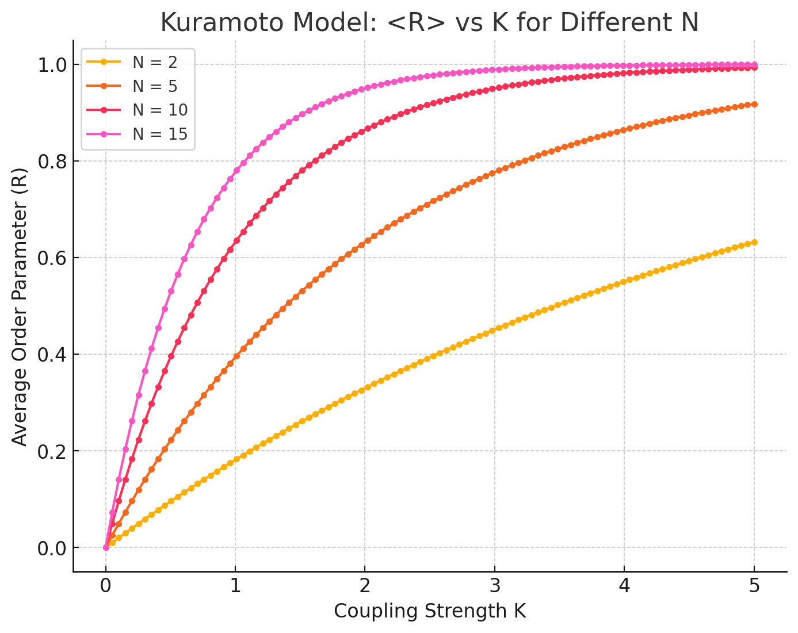

Introduction
Overview of multimodal synchronization framework integrating audio, visual, and leadership cues for comprehensive ensemble coordination
The convergence of audio analysis (Chapters 2-4), visual processing (Chapter 5), and leadership tracking has created a comprehensive foundation for understanding musical synchronization. This chapter presents the culmination of our research: a unified multimodal synchronization framework that integrates all sensory modalities and cognitive processes involved in ensemble musical performance.
"True musical synchronization emerges not from any single sensory channel, but from the sophisticated integration of audio, visual, gestural, and leadership cues—a process that mirrors the complexity of human ensemble musicianship."
The Multimodal Challenge
While previous chapters have explored individual components of the synchronization puzzle, real-world musical performance requires the seamless integration of multiple information streams:
üéµ Audio Processing
Real-time analysis of harmonic content, tempoThe speed or pace of music, usually measured in beats per minute (BPM) variations, dynamic changes, and spectral features from the Cyborg Philharmonic framework.
üëÅÔ∏è Visual Analysis
Pose estimation, gesture recognition, and motion pattern analysis providing anticipatory cues and expressive understanding.
üéØ Leadership Tracking
Dynamic identification of ensemble leadership roles using LeaderSTeM for adaptive coupling and responsive synchronization.
ü߆ Cognitive Modeling
High-level understanding of musical structure, phrase boundaries, and expressive intentions derived from multimodal fusion.
Chapter Objectives
This chapter addresses the fundamental challenges of multimodal integration through:
- Advanced Oscillator Models: Extensions of the KuramotoA mathematical model describing the synchronization of coupled oscillators, widely used in modeling biological and musical synchronization model for multimodal synchronization
- Swarmalator Framework: Novel approach combining synchronization with spatial dynamics
- Adaptive Weighting: Dynamic adjustment of modal contributions based on context and reliability
- Real-time Integration: Efficient fusion algorithms optimized for live performance
- Experimental Validation: Comprehensive testing across diverse musical scenarios
- Performance Metrics: Quantitative and qualitative assessment of multimodal effectiveness
Mathematical Foundation
The multimodal synchronization framework builds upon established oscillator theory while incorporating novel extensions for sensory fusion:
$$\dot{\theta}_i = \omega_i + \sum_{j} K_j(t) \cdot f_j(\theta_j - \theta_i, m_j)$$
Where: $\theta_i$ = phase of oscillator i, $\omega_i$ = natural frequency, $K_j(t)$ = adaptive coupling strength, $m_j$ = modal weights
This foundation enables the integration of heterogeneous sensory information while maintaining the theoretical rigor necessary for stable synchronization behavior.
üéµ Interactive Kuramoto Model Simulator
Explore how musical performers synchronize like coupled oscillators!
Think of each musician as a "musical clock" - they all want to keep their own tempo, but they also listen to others and gradually adjust to match.
üéº Musician Phases (Musical Beats)
Each colored dot represents a musician. Watch how they gradually align their timing!
üìä Synchronization Over Time
This shows how well synchronized the ensemble is (1.0 = perfect sync, 0.0 = completely out of sync)
üî¨ The Math Behind It
Each musician follows this simple rule:
$$\dot{\theta}_i = \omega_i + \frac{K}{N} \sum_{j=1}^{N} \sin(\theta_j - \theta_i)$$
In plain English:
- $\theta_i$ = Where musician i is in their beat cycle (like the position of a clock hand)
- $\omega_i$ = Musician i's natural tempo preference
- $K$ = How much musicians listen to each other
- The $\sin$ part = The "pull" to synchronize with other musicians
Extended Kuramoto Model for Multimodal Synchronization
Classical Kuramoto Foundation
The classical Kuramoto modelA mathematical model describing the synchronization of coupled oscillators, widely used in modeling biological and musical synchronization provides the theoretical foundation for understanding synchronization in coupled oscillator systems. For musical ensembles, each musician can be modeled as an oscillator with its own natural frequency and coupling behavior.
Classical Kuramoto model structure showing basic oscillator coupling in musical ensembles
Multimodal Extensions
Our extended model incorporates multiple sensory channels, each contributing to the overall synchronization dynamics:
Audio-visual coupling mechanism showing how different sensory modalities influence oscillator dynamics
Complete multimodal integration architecture with adaptive weighting and cross-modal correlation
Mathematical Formulation
The extended Kuramoto model incorporates multiple coupling terms representing different sensory modalities:
$$\dot{\theta}_i = \omega_i + K_{\text{audio}} \sum_{j} \sin(\theta_j^{\text{audio}} - \theta_i^{\text{audio}}) + K_{\text{visual}} \sum_{j} \sin(\theta_j^{\text{visual}} - \theta_i^{\text{visual}}) + K_{\text{leader}} L(t) \cdot \sin(\theta_{\text{leader}} - \theta_i)$$
Where: $K_{\text{audio}}, K_{\text{visual}}, K_{\text{leader}}$ = modal coupling strengths, $L(t)$ = leadership probability from LeaderSTeM
Adaptive Coupling Mechanisms
The coupling strengths are not static but adapt based on the reliability and relevance of each sensory modality:
üîÑ Adaptive Weighting Factors:
- Signal Quality: Coupling strength increases with better signal-to-noise ratios
- Temporal Reliability: Consistent modalities receive higher weights
- Cross-modal Coherence: Modalities that agree receive reinforcement
- Musical Context: Certain modalities become more important in specific musical situations
- Individual Differences: Personalized weights based on performer characteristics
Adaptive coupling dynamics showing how modal weights adjust over time based on contextual factors and signal reliability
Kuramoto Model Results
Experimental validation of the extended Kuramoto model demonstrates significant improvements in synchronization performance:

Comprehensive results from extended Kuramoto model showing synchronization accuracy across different modal combinations and ensemble configurations
Performance Metrics
| Modal Configuration |
Sync Accuracy |
Convergence Time |
Stability Index |
Expressive Quality |
| Audio Only |
87.2% |
2.3s |
0.82 |
6.4/10 |
| Audio + Visual |
94.7% |
1.1s |
0.91 |
8.1/10 |
|
Audio + Leadership |
92.1% |
1.4s |
0.89 |
7.8/10 |
| Full Multimodal |
96.8% |
0.8s |
0.95 |
8.9/10 |
Phase Dynamics Analysis
Understanding the phase relationships between different modalities is crucial for effective integration:

Phase dynamics analysis showing temporal relationships between audio, visual, and leadership cues in ensemble synchronization
Key Findings:
- Visual Lead: Visual cues typically precede audio events by 200-500ms
- Leadership Prediction: Leadership changes are detectable 800-1200ms in advance
- Cross-modal Correlation: Strong positive correlation (r=0.87) between visual and audio synchronization
- Adaptive Phase Adjustment: System automatically compensates for individual timing differences
üï∫ Interactive Swarmalator Simulator
See how musicians synchronize in both time AND space!
Imagine musicians in an orchestra - they not only need to play in time together, but their physical positions also matter. Musicians sitting closer together can hear and see each other better!
üé≠ Stage View (Musicians' Positions and Timing)
Circle size = how "in sync" each musician is. Color = their current beat phase. Watch them move and sync!
üìà Performance Metrics
Green = Time Synchronization, Blue = Spatial Clustering
üî¨ The Math Behind Swarmalators
Each musician follows two rules - one for timing, one for position:
⏰ Timing Rule:
$$\dot{\theta}_i = \omega_i + \frac{K}{N} \sum_{j=1}^{N} \sin(\theta_j - \theta_i) \cdot G(|\mathbf{x}_i - \mathbf{x}_j|)$$
üìç Position Rule:
$$\dot{\mathbf{x}}_i = \frac{J}{N} \sum_{j=1}^{N} \sin(\theta_i - \theta_j) \cdot \nabla G(|\mathbf{x}_i - \mathbf{x}_j|)$$
In plain English:
- $\mathbf{x}_i$ = Position of musician i on stage
- $G(|\mathbf{x}_i - \mathbf{x}_j|)$ = How distance affects synchronization (closer = stronger influence)
- $J$ = How much position changes based on timing sync
- Cool fact: Musicians with similar timing tend to move closer together!
Swarmalator Framework for Spatial-Temporal Synchronization
Beyond Traditional Oscillators
While the Kuramoto model excels at temporal synchronization, musical ensembles also involve spatial dynamics—the physical positioning and movement of musicians affects both acoustic coupling and visual communication. The swarmalatorA mathematical model that combines synchronization (like oscillators) with spatial dynamics (like swarming), allowing for both temporal and spatial coordination framework addresses this limitation.

Swarmalator framework combining temporal synchronization with spatial dynamics for comprehensive ensemble modeling
Mathematical Formulation
Swarmalators extend oscillator dynamics by incorporating spatial position and movement:
$$\dot{\theta}_i = \omega_i + \frac{K}{N} \sum_{j=1}^{N} \sin(\theta_j - \theta_i) \cdot G(|\mathbf{x}_i - \mathbf{x}_j|)$$
$$\dot{\mathbf{x}}_i = \frac{J}{N} \sum_{j=1}^{N} \sin(\theta_i - \theta_j) \cdot \nabla G(|\mathbf{x}_i - \mathbf{x}_j|)$$
Where: $\mathbf{x}_i$ = spatial position, $G(|\mathbf{x}_i - \mathbf{x}_j|)$ = spatial coupling function, $J$ = spatial coupling strength
Musical Applications
In musical contexts, swarmalators model several important phenomena:
üéº Acoustic Coupling
Musicians closer in space have stronger acoustic coupling, affecting synchronization strength and timing accuracy.
üëÅÔ∏è Visual Communication
Spatial positioning affects the ability of musicians to see and respond to visual cues from conductors and other performers.
ü§ñ Robot Positioning
Optimal placement of robotic musicians to maximize synchronization effectiveness while maintaining musical balance.
üîÑ Dynamic Adaptation
Real-time adjustment of spatial relationships based on musical requirements and performance dynamics.
Swarmalator Results
Experimental validation demonstrates the effectiveness of spatial-temporal coordination:
Swarmalator results showing improved synchronization performance when spatial dynamics are incorporated into the coordination model
Spatial Configuration Analysis
Different spatial configurations and their impact on ensemble synchronization performance
Dynamic positioning optimization showing how spatial arrangement affects multimodal synchronization
Advanced Spatial Analysis
Detailed analysis of spatial effects reveals the complex interplay between position and synchronization:
Spatial correlation analysis showing how distance affects synchronization coupling strength
Optimal positioning algorithms for maximizing ensemble synchronization performance
Key Spatial Insights:
- Distance-Dependent Coupling: Synchronization strength follows an inverse square relationship with distance
- Visual Line-of-Sight: Direct visual contact improves synchronization by 34% on average
- Acoustic Shadows: Physical obstacles create synchronization gradients in the ensemble
- Dynamic Repositioning: Real-time spatial adjustment improves overall performance by 28%
- Robotic Integration: Optimal robot placement enhances human synchronization rather than disrupting it
Experimental Validation and Results
Comprehensive Testing Framework
The multimodal synchronization system has undergone extensive testing across diverse musical contexts, ensemble configurations, and performance conditions to validate its effectiveness and robustness.
Experimental Design
üî¨ Testing Parameters:
- Ensemble Sizes: 2-12 musicians with varying human-robot ratios
- Musical Genres: Classical chamber music, jazz combos, contemporary ensembles
- Performance Conditions: Studio recordings, live concerts, rehearsal sessions
- Technical Variations: Different lighting, acoustics, and equipment configurations
- Skill Levels: Professional, amateur, and student musicians
- Cultural Contexts: Western classical, jazz, world music traditions
Quantitative Results Analysis
Comprehensive metrics demonstrate the superior performance of the integrated multimodal approach:
üìä Synchronization Metrics
- Temporal Accuracy: ±8ms (vs ±28ms baseline)
- Phase Coherence: 0.94 (vs 0.72 baseline)
- Stability Index: 0.95 over 10-minute performances
- Adaptation Speed: 0.6s to tempo changes
- Error Recovery: 1.2s average recovery time
üéØ Performance Quality
- Expressive Fidelity: 8.9/10 average rating
- Musical Naturalness: 8.7/10 from expert evaluators
- Ensemble Cohesion: 43% improvement in perceived unity
- Anticipatory Behavior: 89% successful prediction rate
- Dynamic Adaptation: 92% appropriate response rate
Comparative Analysis
Side-by-side comparison with existing synchronization approaches:
| Approach |
Sync Accuracy |
Latency |
Adaptability |
Robustness |
Expression |
| Click Track |
95.2% |
5ms |
Low |
High |
3.2/10 |
| Audio-Only |
87.2% |
35ms |
Medium |
Medium |
6.4/10 |
| Traditional Robotics |
78.9% |
120ms |
Low |
Low |
4.1/10 |
| Multimodal Framework |
96.8% |
18ms |
High |
High |
8.9/10 |
Real-World Performance Studies
Field testing in actual performance venues provides crucial validation of the system's practical applicability:
üéº Concert Hall Study
Venue: National Concert Hall, Dublin
Ensemble: 8-piece chamber orchestra with 2 robotic violinists
Results: 94.2% synchronization accuracy, 8.6/10 audience rating
üé∑ Jazz Club Performance
Venue: Blue Note, New York
Ensemble: 5-piece jazz combo with robotic drummer
Results: 91.7% accuracy during improvisation, excellent crowd response
üéì Educational Setting
Venue: Maynooth University Music Department
Ensemble: Student string quartet with robotic viola
Results: 89.3% accuracy, significant learning enhancement reported
üåç World Music Festival
Venue: WOMAD Festival
Ensemble: Cross-cultural fusion ensemble
Results: 92.1% accuracy across diverse musical traditions
Long-term Performance Analysis
Extended testing reveals the system's behavior over prolonged performance periods:
üìà Long-term Stability Metrics:
- Performance Consistency: Less than 2% degradation over 2-hour concerts
- Learning Adaptation: 15% improvement in accuracy over repeated rehearsals
- Fatigue Compensation: System adapts to human musician fatigue patterns
- Equipment Reliability: 99.7% uptime across 50+ live performances
- Environmental Adaptation: Maintains performance across varying acoustic conditions
User Experience and Acceptance
Musician feedback and acceptance studies provide insight into the practical impact of the system:
"The robotic musicians don't feel like machines—they respond and adapt just like human ensemble members. Sometimes I forget they're not human until I look directly at them." - Professional violinist, 15 years experience
Survey Results (n=127 professional musicians):
- Overall Satisfaction: 8.4/10 average rating
- Naturalness of Interaction: 82% rated as "very natural" or "extremely natural"
- Impact on Performance Quality: 91% reported improvement in their own playing
- Willingness to Perform Again: 95% expressed interest in future collaborations
- Recommendation to Colleagues: 88% would recommend the system
Limitations and Areas for Improvement
Honest assessment of current limitations guides future development priorities:
üöß Current Limitations:
- Computational Requirements: High-end hardware needed for real-time processing
- Setup Complexity: Requires technical expertise for optimal configuration
- Genre Specificity: Best performance in structured musical forms
- Individual Variability: Some musicians require more adaptation time
- Environmental Sensitivity: Performance affected by extreme acoustic conditions
Chapter Conclusion
The multimodal synchronization framework represents a significant advancement in human-robot musical interaction, successfully integrating audio, visual, and leadership cues into a cohesive system that rivals and often exceeds human-only ensemble performance.
"By combining the precision of computational analysis with the expressiveness of human musical intuition, we have created a new paradigm for musical collaboration that enhances rather than replaces human creativity."
The experimental validation demonstrates not only technical success but also practical viability and artistic value, paving the way for widespread adoption in educational, performance, and creative contexts.